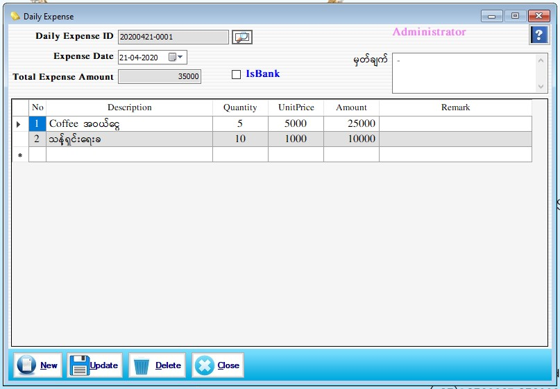

Daily Expense Setup

- Daily Cash Trans အောက်မှ Daily Expense Form ကိုဖွင့်ပါ။
- ဆိုင်အတွက်ဝယ်ယူသော ရွှေထည်များ၏အသုံးစရိတ်မဟုတ်ဘဲ တခြားအသုံးစရိတ်များကို ထည့်သွင်းရာတွင် အသုံးပြုရမည့် Form ဖြစ်ပါသည်။ (ဥပမာ- ရေသန့်၊အချိုရည်၊ဘုရားပန်း၊စသည်ဖြင့်...) ။
- Daily Expense ID တွင် Series အလိုက် Software မှ Auto တွက်ပေးပါမည်။
- Expense Date တွင် ယခုရောက်ရှိနေသော ရက်စွဲကို ပြပေးပါမည်။
- Total Expense Amount တွင် ယနေ့ အသုံးစရိတ်၏ စုစုပေါင်းငွေပမာဏကိုပြပေးနေလိမ့်မည်။ မှတ်ချက်တွင် လိုအပ်သည်များကို ဖြည့်စွက်နိုင်ပါသည်။
- အောက်ပါဇယားတွင် ယနေ့သုံးစွဲသည့် အသုံးစရိတ်ကို ထည့်သွင်းပေးရမည်။ No တွင် အမှတ်စဉ်အလိုက် Software မှ Auto ပြပေးနေလိမ့်မည်။ Description တွင် မိမိသုံးသည့် အသုံးစရိတ်၏နာမည်ကိုရေးပါ။ Quantity နှင့် Unit Price ကိုထည့်ပေးပါက Amount သည် Software မှ Auto တွက်ပေးမည်ဖြစ်ပြီး Remark တွင် ကြိုက်နှစ်သက်ရာ ဖြည့်စွက်နိုင်ပါသည်။ Data များဖြည့်စွက်ပြီးပါက Save Button ကိုနှိပ်၍ သိမ်းဆည်း နိုင်ပါသည်။
- သိမ်းဆည်းပြီးသား Data များအား ပြန်လည်ကြည့်ခြင်း၊ ပြင်ဆင်ခြင်းများပြုလုပ်ချင်ပါက Daily Expense ID ၏ ဘေးတွင် ရှိသော မှန်ဘီလူး button ကိုနှိပ်ပြီးပြန်လည်ကြည့်ရှုပြင်ဆင်ချင်သော Expense အား ရွေးချယ် ပြီးပြင်နိုင် ပါသည်။
- သိမ်းဆည်းပြီးသား ထည့်ပြီးသား Data များကို ဖျက်လိုလျှင် မှန်ဘီလူး button အားနှိပ်ပြီးရှာပါ။ ထို့နောက် မိမိဖျက်လိုသော Data ကို Delete Button ကိုနှိပ်၍ ဖျက်နိုင်ပါသည်။
- Expense အသစ်ထည့်လိုပါက New Button ကိုနှိပ်ပြီး အသစ်ထည့်နိုင်ပါသည်။
- Daily Expense Form အား အသုံးပြုပြီးပါက Close Button ကိုနှိပ်၍ ပိတ်နိုင်ပါသည်။